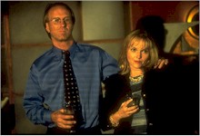

Contents | Features | Reviews | Books | Archives | Store |
 |
|
| Movie Credits | Buy It! |
The Big Brass Ring
Review by Sean Axmaker
Posted 13 August 1999
| Directed by George Hickelooper Starring
William Hurt, Written by F.X. Feeney and George Hickelooper, |
It may not seem like it to Showtime but they scored quite a coup when they got George Hickenlooper's The Big Brass Ring. The independent production, based on the original, unfilmed screenplay by Orson Welles with Oja Kodar, didn't begin life as a made-for-cable movie. After excellent notices from film festival appearances, notably the Los Angeles Independent Film Festival (where it premiered in April), Cannes, and Munich (among others), I expected this independent production to receive at least a limited art house release. But the Welles legacy lives on: he originally wrote the script for a commercial comeback which, sadly, was not to be (the whole story can be read in afterward of the published screenplay and the biographies by Barbara Leaming and Frank Brady). Similarly, no one found Hickenlooper's film of the Welles story particularly commercial and it languished in distribution limbo until Showtime (who also picked up Adrian Lyne's Lolita when no one would touch it) picked it up for a "Showtime Original."
Though based on a script by Orson Welles, The Big Brass Ring is not a Welles film. Hickenlooper (whose previous credits include the documentary Hearts of Darkness and the Gen-X comic drama The Low Life) and critic/screenwriter F.X. Feeney extensively rewrote the project, keeping many elements but streamlining the drama of cynicism, corruption, and betrayal that Welles inflected with a melancholy sense of loss, losing some of the melancholy and complexity of relationship between the two leads and pumping up the more public aspects of the political thriller elements. The setting of Welles' original (a European sojourn in the aftermath of the 1980 Presidential election) has been relocated to the US (St. Louis to be specific) and updated to the 2000 Gubernatorial race. (A more detailed list and discussion of changes can be found below.)
William Hurt is Blake Pellarin, a political boy-wonder running as an independent candidate backed by the considerable fortune of his wife Dinah (Miranda Richardson), an ambitious and cagey woman ("richer than God," as Pellarin is so found of saying) who hides her unhappiness in closet alcoholism. Pellarin is a mix of idealism and pragmatism, dropping prepared speeches to launch into his favorite causes (carefully chosen for his audiences: he knows they'll respond). Running neck-in-neck with another independent, this race has focused America and the world on Missouri, where the Republican and Democrats have been left in the cold (they are in fact attempting to woo these men to their camps) and pundits predict that this could be the end of the two party system. Like everyone, Pellarin has a skeleton in his closet and the world believes his is a longtime association, now severed, with the political genius Dr. Kimball Mennaker (Nigel Hawthorne, in the part Welles had written for himself). A former senator, White House insider, and all around firebrand, Mennaker was Pellarin's mentor and a veritable foster father, but his homosexuality and scandalous private life cost him a political future. He now lives in voluntary exile in Cuba, emerging periodically to deliver flamboyantly fiery political commentaries and lively interviews. But when Mennaker emerges from his exile to contact Pellarin a week before the election he carries with him a name that shakes Pellarin up: Ray Romero.
Leaving his Cuban home to take up temporary residence in the sleazy, smoky private quarters of a Riverboat casino that caters to the gay crowd (complete with a Chippendales'-style floor show), Mennaker lures Blake to a meeting with a name and a photo dredged from the past. Flashbacks show Mennaker in a studio with a camera and couple of scantily-clad young men. Is one of them Pellarin? Meanwhile an ambitious cable news reporter, Cela Brandini (Irene Jacob), is hunting down the leads dropped by Mennaker in a private interview and starts to investigate Romero, a Vietnam soldier killed in action with a connection to Pellarin: he was his stepbrother. While Pellarin tries to buy Mennaker off and Brandini tries to crack the secret of Mennaker and Romero, Pellarin's unpredictable bodyguard Kinzel (Ewan Stewart) hatches his own plan to save his boss while putting him in his debt. The election is only days away and the threat of scandal lingers in the air, but Pellarin is suffering from more than political anxiety. The secrets and lies he's hidden all these years have cracked through his political shell of pragmatism and calculating and opened a well of guilt for past deeds and betrayals.
William Hurt, who won the Best Actor award at the Newport International Film Festival, seems an unlikely choice for a passionate political firebrand, yet he pulls the part off well. Hurt's best performances have always been characters keeping a lid on their emotions, reserved men both gentle and gruff but rarely giving. When he rises to a pitch in the film's opening speech, however, he feels like a man overcome with righteous fervor, a man of the people driven by deep held passions. It's only the aftermath that shows a man calculating, controlled, emotionally closed off. Richardson's Dinah shows the strains of living with a man whose affections stop short of real love anymore, a lonely and frustrated wife whose dutiful campaign solidarity seems more a matter of political partnership than genuine affection.
Nigel Hawthorne's Mennaker should be dominating the show, not by virtue of the most scenes (that honor belongs to Pellarin) but by the complex mix of affection, ambition, and political impotence masked in charm and power games that winds up driving Pellarin through the movie. In a Welles film you can be assured that would be the case, and Hawthorne delivers an excellent performance: sly, wry, flamboyant and a little decadent, a would-be statesman who pontificates for the enjoyment of being the center of attention. His conflicted feelings for former protégé and veritable son Pellarin leave him taunting, teasing, and threatening the "boy," perhaps merely to lure him back for the pleasure of his company. Hickenlooper falls a little short in this central relationship. The flashbacks come on a little strong, heavy on the "betrayal" and light on the fatherly affection, thick with decadence and exploitation but suggesting little of the emotional ties that still lie, however buried, between the two.
But it's a forgivable weakness. Hickenlooper's focus is on the step-brothers and the love-hate relationship that's haunted Pellarin all these years. In the final scenes of the film Hurt's face, stripped of his masks and shells, opens in naked emotion, his fears and guilt and self-hatred overcome by love and a chance to set things right. It's a powerful moment: Hickenlooper allows the emotions to flood the scene while filming it with discreet respect. And to the film's credit, he maintains the complexity of relationships through to the conclusion. There are no simple answers, and the political compromises forced on Pellarin in his chosen profession are neither lessened nor forgotten.
The plot gets periodically sidetracked in complications with Kinzel and other members of the staff (who fade into the background after the initial scenes) and Irene Jacob is simply unconvincing as the ambitious reporter Cela Brandini, whose clumsy English and flat delivery doesn't help give her any authority as an investigative reporter with a reputation as one of the top media journalists around. Dinah's absence from much of the film leaves her character rather impotent without actually exploring the gap between her surface strength and her sad lack of confidence. These are distracting but hardly devastating weaknesses.
Hickenlooper directs in a restrained, removed style, a very different approach from the labyrinthine legacy of Orson Welles. "I actually thought more about John Ford and Renoir when I shot the picture than I did about Welles," wrote Hickenlooper on a posting on the Orson Welles Web Board. It's a handsome, sleek, understated style with occasional recourses to dense intercutting (as in the opening) and it serves his conception of the film well. His control of scenes is excellent, the characters maintaining a careful reserve even off the campaign trail, all in broad contrast to Mennaker, whose flamboyant unpredictability threatens the campaign not merely with whatever deep secrets he carries from Pellarin's past, but by his embarrassing presence alone.
For Welles fans there are a few delicious references: Brandini's biography of Mennaker is titled "Bright Lucifer" (the titles of a play Welles wrote as a teenager) and Pellarin gets to quote the famous Shakespeare line that climaxes "Chimes at Midnight": "I know thee not, old man." Neither of these bits are in the original script (Welles was not one for referencing his art, only his life) and they neither add nor detract from the film, but they are fun little tidbits for the faithful.
I've followed the development of this film from the moment I heard Hickenlooper had optioned the story from Oja Kodar. You can count me among the Welles aficionados waiting with a mixture of anticipation and dread, and I'm happy to say that he makes a respectable, compelling, rich and complex work. The Big Brass Ring is not a Welles film. It's a George Hickenlooper film, and a good one.
A note on the adaptation:
Orson Welles wrote numerous drafts of "The Big Brass Ring," the final draft of which was published in an expensive collector's edition in 1987, followed by a smaller, more affordable paperback in 1991. (I'd like to offer thanks to Nitrate contributor Greg Avery, who sent me a copy last year for Christmas.) When George Hickenlooper optioned the property from Oja Kodar, Welles' companion and collaborator for the last two decades of his life, he received not simply the final draft but all previous versions, notes, and other materials. While it's impossible to know how much was culled from earlier, unpublished material without access to those manuscripts, I think it's safe to say that Hickenlooper and co-screenwriter F.X. Feeney took the characters into a completely different direction than Welles and Kodar had envisioned.
Mind you, by itself that's not good, bad, or otherwise. Surely many Welles-obsessed fanatics will take exception to Hickenlooper's "blasphemy," daring to change the work of the master. As if any Welles script made it from page to screen intact, or any property inherited by Welles (like Touch of Evil and Lady From Shanghai) didn't emerge completely different, subsumed into Welles' vision. What Hickenlooper has done is nothing less than taking one man's vision and transforming it into his own. Surely he could have never created a Welles film even if he wanted to, and like any creative artist why would he have?
Now, briefly, on to the details. There may be spoilers ahead, so read no further unless you experienced both the screenplay and the film, or don't care to see either of their stories spoiled.
The initial primary change is the setting. The script takes place in 1980 Africa and Spain, in the wake of a failed bid for the Presidency, licking wounds and laying the groundwork for the next run in four years. Full of references to Nixon, Reagan, Watergate, and Vietnam (not to mention the past generation of Roosevelt and Eisenhower), it places the film right smack in the cynicism and corruption of modern politics and by extension suggests it reaches back through the sixties.
The film takes place in Missouri the final days of the Missouri gubernatorial race in 2000, reported on by network TV and international news cable, and emphasizes the pedigree of the two candidates: both independents, threatening the ruin of the two party system. This specific change moves the entire tone of the film, trading the melancholy of defeat and the legacy of a past referred to but not seen to the tension generated by fears of scandal in the final days of an active campaign.
The other major change is the "secret" (major spoiler ahead). In the script Blake Pellarin fought in Vietnam as an escape from the soulless world of modern politics that burned him out (as a member of Johnson's cabinet). Though married, he fell in love with a Vietnamese woman whom he brought to Paris and had every intention to marry. Mennaker's legacy involves the manipulation of that relationship. The history that hangs over the script is his willingness to give up his political legacy for a life of possible happiness with a woman he loved.
In the film the secret is that Pellarin's brother, MIA in Vietnam but recently turned up alive, switched identities with Pellarin, taking his draft number and name and allowing his ambitious brother to enter politics. Again, this is a manipulation of Mennaker, who was willing to sacrifice the one rowdy, unambitious boy for the future of the other, and flashbacks show Pellarin unable to stop his brother from making this sacrifice, turning his back on him, and living with that for the rest of his life. We assume that this marked the end of his association with master manipulator Mennaker, who in addition to sacrificing the brother also seduced him and sexually used the boy in his erotic photos.
The homosexual aspect is neither as lurid or as negative in Welles' script, which makes a point of referring to Mennaker "coming out of the closet" as a healthy and personally rewarding experience. He has no history of boys or a private pornographic studio, his love for Pellarin is genuine, unrequited, and unconsummated. His betrayal -- destroying his future with his Vietnamese lover -- is a little more complex, combining jealousy of Pellarin's love with the fear that he's throwing away the political future laying in front of him, the future Mennaker can never have and hopes to experience vicariously through Pellarin.
There are other changes, minor but multitudinous, which shape the film into a very different story than the script. Though too numerous to mention, they change the mood and theme dramatically, removing the rich layers of historical references Welles' often ambiguous script to create a modern picture with modern references, more streamlined and less shadowy, with flashbacks to explore ideas the Welles layered in though suggestion. This is not a critical assessment, only an observation. Welles' screenplay, as pointed out by Jonathan Rosenbaum in his afterward, is crafted from personal and often autobiographical details of Welles' life. Those elements would not have the same resonance to Hickenlooper, as indeed neither would the historical period and political references of Welles' script (which was, it should be noted, contemporary when he wrote it).
One last observation: a reading of the published script should satisfy anyone that, though haunting and often brilliant, the script is ultimately a foundation for a film. Welles would surely have rewritten it and there is no doubt that once he began shooting his complex visual style would have turned the film into a labyrinthine, striking, possibly overwhelming film that transforms the words on the page into ironic echoes of the characters. The linear structure may have been completely fractured into a kaleidoscopic approach in the editing room, where Welles routinely restructured scenes, sequences, and even narrative designs. George Hickenlooper's film is not the script Welles wrote, but had Welles actually had the opportunity to direct his own script you can be sure his wouldn't have been either.
I leave the last words to George Hickenlooper himself, who wrote the following on a posting on the Orson Welles Web Board: "I treated this project strictly as an adaptation. I've been criticized for this of course, but I was simply looking at Welles as the writer -- the brilliant writer that he was, regardless of Pauline Kael's insipid essay. Welles in many respects was the Shakespeare of the American cinema. So, if Welles adapted Shakespeare, why not adapt Welles?"
The address of the Orson Welles Web Board is: http://film.tierranet.com/wwwboardowelles/wwwboard.html
Contents | Features | Reviews
| Books | Archives | Store
Copyright © 1999 by Nitrate Productions, Inc. All
Rights Reserved.